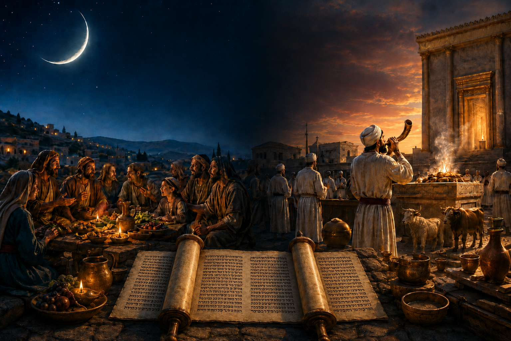

статья Рош-ходеш — древний еврейский праздник, который Тора превратила в храмовый регламент
Среди праздников Танаха есть один особенно любопытный случай — Рош-ходеш (רֹאשׁ חֹדֶשׁ), то есть день новолуния (начало нового месяца) [1]. В пророческих и исторических книгах он выглядит как живой народный священный день: в него устраивали праздничные трапезы, прекращали торговлю, посещали человека Божьего и воспринимали его рядом с шаббатом и другими праздничными днями. Но в Торе, особенно в её позднем жреческом (Р) слое, этот праздник лишён социальной жизни и сведён к трублению и храмовым жертвоприношениям.
Отсюда возникает вопрос: почему праздник, который знали пророки и почитал народ не получил полноценного статуса в календаре Торы?
◊ Этимология
Еврейское выражение: Рош-ходеш רֹאשׁ חֹדֶשׁ буквально означает «голова месяца», то есть начало месяца. Оно состоит из двух слов: רֹאשׁ — «голова», «начало» [2], и חֹדֶשׁ — «месяц» или «новолуние» [3]. Важно, что корень חדשׁ связан с идеей нового: חָדָשׁ — «новый», חִדֵּשׁ — «обновлять» [4], חֹדֶשׁ — «месяц / новолуние». Поэтому Рош-ходеш — это не просто календарная дата, а день обновления времени: начало нового месяца, отмеченное появлением новой луны на небе. [5] [6]
◊ Ближневосточный контекст: Левант и Месопотамия
Рош-ходеш не возник в вакууме. Древний Израиль жил внутри ближневосточного мира, где луна была одним из главных регуляторов времени. Месяцы считались по луне, праздники привязывались к фазам луны, а начало месяца имело религиозное значение. Поэтому новолуние было естественным моментом перехода: старый месяц завершён, новый месяц открыт.
В угаритском культовом мире лунные фазы были связаны с жертвенной практикой. В Угарите известны ритуалы, связанные с новолунием и полнолунием. Это не значит, что израильский Рош-ходеш был простым заимствованием из Угарита, но показывает, что сама идея праздновать или сакрализовать начало лунного месяца была понятна всему региону. [7] [8]
В аккадской традиции само слово, обозначающее месяц, могло пересекаться с понятием новолуния. Это очень похоже на еврейское חֹדֶשׁ, которое значит и «месяц», и «новолуние». В древнем мире начало месяца было не сухой датой в календаре, а видимым небесным знаком. [9]
За днём новолуния стояла астрономическая логика. Появление новой луны открывало новый месяц. Небо давало знак, а человек начинал новый отсчёт времени. В мире без печатных календарей и электронных часов именно такие небесные знаки были основой общего времени.
Это также воспринималось как обновление мира. Новолуние обозначало возвращение света после тёмной фазы луны. Поэтому оно легко становилось символом возобновления: старый цикл завершился, новый цикл рождается. В таком мышлении время не течёт как пустая линия; оно постоянно умирает и обновляется. Каждый месяц мир как будто заново входит в порядок. [10]
Часто этот день посвящали лунному божеству. В месопотамской религии луна была не просто природным явлением, а связана с лунным богом Нанной / Сином. Поэтому начало месяца могло восприниматься как время, находящееся под покровительством лунного божества. Новый месяц не просто «начинался»; он открывался перед богами, через храм, жертвы, молитвы и ритуальное признание божественного порядка. [11]
На этом фоне еврейский Рош-ходеш выглядит частью общего ближневосточного мира, но с важным отличием. Израиль сохраняет лунную структуру месяца, однако не превращает луну в самостоятельный объект поклонения. Новолуние остаётся знаком обновления времени, но само время принадлежит не луне и не лунному божеству, а Яхве.
◊ Какой образ Рош-ходеша в Танахе?
Самое интересное состоит в том, что Рош-ходеш лучше всего виден не в Торе, а в пророческих и историко-пророческих текстах Танаха. Там он не выглядит как случайная дата. Так о нём говорят тексты:
Шемуэля I 20:5
| Шемуэля I 20:5 | И сказал Давид Йонатану: «Вот, завтра новолуние, и я должен сидеть с царём за трапезой. Отпусти меня, и я укроюсь в поле до вечера третьего дня». | וַיֹּאמֶר דָּוִד אֶל־יְהוֹנָתָן הִנֵּה־חֹדֶשׁ מָחָר וְאָנֹכִי יָשֹׁב־אֵשֵׁב עִם־הַמֶּלֶךְ לֶאֱכוֹל וְשִׁלַּחְתַּנִי וְנִסְתַּרְתִּי בַשָּׂדֶה עַד הָעֶרֶב הַשְּׁלִשִׁית | שמואל א כ:ה |
Данный текст показывает, что новолуние было заметным общественным днём. Его отмечали не только жертвами, но и трапезой. Отсутствие Давида за столом требовало объяснения, потому что в такой день ожидалось присутствие членов царского круга. [12]
Мелахим II 4:23
| 2 Мелахим 4:23 | И сказал он: «Почему ты идёшь к нему сегодня? Не новолуние и не шаббат». Она сказала: «Всё хорошо». | וַיֹּאמֶר מַדּוּעַ אַתְּ הֹלֶכֶת אֵלָיו הַיּוֹם לֹא־חֹדֶשׁ וְלֹא שַׁבָּת וַתֹּאמֶר שָׁלוֹם | מלכים ב ד:כג |
Здесь шунамитянка хочет пойти к пророку Элише, муж спрашивает: «Почему ты идёшь к нему сегодня?» Смысл вопроса ясен: обычно к человеку Божьему ходили именно в такие священные дни — в новолуние или в шаббат. Значит, Рош-ходеш был днём религиозного обращения, наставления или благословения, в том числе и для беременности.
Амос 8:5
| Амос 8:5 | Говоря: «Когда пройдёт новолуние, чтобы нам продавать зерно, и шаббат — чтобы открыть продажу хлеба, уменьшая эйфу, увеличивая шекель и искажая весы обмана?» | לֵאמֹר מָתַי יַעֲבֹר הַחֹדֶשׁ וְנַשְׁבִּירָה שֶּׁבֶר וְהַשַּׁבָּת וְנִפְתְּחָה־בָּר לְהַקְטִין אֵיפָה וּלְהַגְדִּיל שֶׁקֶל וּלְעַוֵּת מֹאזְנֵי מִרְמָה | עמוס ח:ה |
У Амоса торговцы ждут, когда закончится новолуние, чтобы снова продавать зерно. Этот текст особенно важен. Он показывает, что новолуние было не просто жертвенным днём для священников. Оно влияло на экономическую жизнь. Торговля должна была ждать. Поэтому новолуние функционировало как день, отделённый от обычного рынка.
Йешаягу 1:13–14
| Йешаягу 1:13–14 |
(13) Не продолжайте приносить тщетное приношение; курение — мерзость для Меня.
Новолуние и шаббат, созыв собрания — не могу терпеть беззаконие
и торжественное собрание.
(14) Ваши новолуния и ваши праздники возненавидела душа Моя; они стали Мне бременем, Я устал нести их. |
לֹא תוֹסִיפוּ הָבִיא מִנְחַת־שָׁוְא קְטֹרֶת תּוֹעֵבָה הִיא לִי חֹדֶשׁ וְשַׁבָּת קְרֹא מִקְרָא לֹא־אוּכַל אָוֶן וַעֲצָרָה׃ חָדְשֵׁיכֶם וּמוֹעֲדֵיכֶם שָׂנְאָה נַפְשִׁי הָיוּ עָלַי לָטֹרַח נִלְאֵיתִי נְשֹׂא׃ | ישעיהו א:יג–יד |
У Йешаягу новолуния стоят рядом с шаббатами и праздничными собраниями. Пророк критикует не сам календарь, а лицемерный культ: люди приносят жертвы и собираются на праздники, но их руки полны неправды. Здесь новолуние входит в ряд значимых священных дней.
Гошеа 2:13
| Гошеа 2:13 | И прекращу всё её веселье: её праздники, её новолуния, её шаббаты и все её назначенные времена. | וְהִשְׁבַּתִּי כָּל־מְשׂוֹשָׂהּ חַגָּהּ חָדְשָׁהּ וְשַׁבַּתָּהּ וְכֹל מוֹעֲדָהּ | הושע ב:יג |
У Гошеа Бог говорит, что прекратит «её веселье»: праздники, новолуния и шаббаты. Здесь Рош-ходеш снова стоит в одном ряду с главными календарными торжествами. Для пророческой традиции новолуние было частью живого праздничного ритма Израиля.
Йехезкель 46:1–6
| Йехезкель 46:1–6 | (1) Так сказал Господин Яхве: ворота внутреннего двора, обращённые на восток, будут закрыты шесть рабочих дней, а в день шаббата будут открыты, и в день новолуния будут открыты. | כֹּה־אָמַר אֲדֹנָי יְהוִה שַׁעַר הֶחָצֵר הַפְּנִימִית הַפֹּנֶה קָדִים יִהְיֶה סָגוּר שֵׁשֶׁת יְמֵי הַמַּעֲשֶׂה וּבְיוֹם הַשַּׁבָּת יִפָּתֵחַ וּבְיוֹם הַחֹדֶשׁ יִפָּתֵחַ | יחזקאל מו:א–ו |
| (2) И войдёт князь через притвор ворот снаружи, и станет у косяка ворот; и священники совершат его всесожжение и его мирные жертвы. Он поклонится у порога ворот и выйдет, а ворота не будут закрыты до вечера. | וּבָא הַנָּשִׂיא דֶּרֶךְ אוּלָם הַשַּׁעַר מִחוּץ וְעָמַד עַל־מְזוּזַת הַשַּׁעַר וְעָשׂוּ הַכֹּהֲנִים אֶת־עוֹלָתוֹ וְאֶת־שְׁלָמָיו וְהִשְׁתַּחֲוָה עַל־מִפְתַּן הַשַּׁעַר וְיָצָא וְהַשַּׁעַר לֹא־יִסָּגֵר עַד־הָעָרֶב | ||
| (3) И народ земли будет поклоняться перед Яхве у входа этих ворот в шаббаты и в новолуния. | וְהִשְׁתַּחֲווּ עַם־הָאָרֶץ פֶּתַח הַשַּׁעַר הַהוּא בַּשַּׁבָּתוֹת וּבֶחֳדָשִׁים לִפְנֵי יְהוָה | ||
| (4) А всесожжение, которое князь принесёт Яхве в день шаббата: шесть безупречных ягнят и безупречный баран. | וְהָעֹלָה אֲשֶׁר־יַקְרִב הַנָּשִׂיא לַיהוָה בְּיוֹם הַשַּׁבָּת שִׁשָּׁה כְבָשִׂים תְּמִימִם וְאַיִל תָּמִים | ||
| (5) И хлебное приношение: эйфа на барана, а на ягнят — хлебное приношение по мере его дара; и масла — гин на эйфу. | וּמִנְחָה אֵיפָה לָאַיִל וְלַכְּבָשִׂים מִנְחָה מַתַּת יָדוֹ וְשֶׁמֶן הִין לָאֵיפָה | ||
| (6) А в день новолуния — молодой бык без порока, и шесть ягнят, и баран; они должны быть без порока. | וּבְיוֹם הַחֹדֶשׁ פַּר בֶּן־בָּקָר תְּמִימִם וְשֵׁשֶׁת כְּבָשִׂים וָאַיִל תְּמִימִם יִהְיוּ |
У Йехезкеля новолуние уже выглядит более храмово и упорядоченно: ворота внутреннего двора открываются в шаббат и в день новолуния, а народ поклоняется у входа. Это уже ближе к позднему храмовому мышлению: Рош-ходеш сохраняется, но постепенно входит в систему храмового порядка.
Итак, в танахический Рош-ходеш, судя по пророческим и историческим текстам, народ не просто отмечал начало нового месяца, а входил в особое священное время. В этот день могли устраивать праздничную трапезу, как видно из рассказа о Давиде при дворе Шауля; посещать пророка или «человека Божьего», как в истории шунамитянки; останавливать обычную торговлю, что резко критикует Амос; собираться для поклонения перед Яхве, как у Йехезкеля. [13]
◊ Рош-ходеш в Торе
Самое удивительное начинается тогда, когда мы сравниваем пророческие тексты о Рош-ходеше с Торой. В Торе Рош-ходеш почти не получает самостоятельного описания как народного праздника.
В Шмот 12:2 говорится о начале месяцев, но там речь идёт не о ежемесячном празднике Рош-ходеш, а о календарной точке, от которой начинается пасхальный месяц. Текст задаёт начало года, но не описывает новолуние как регулярный праздник.
В Ваикра 23:23–25, где перечислены священные времена, обычный ежемесячный Рош-ходеш вообще не развёрнут как отдельный праздник. Там есть особый день первого числа седьмого месяца — זִכְרוֹן תְּרוּעָה, «память трубления». Этот день станет связан с Рош ха-Шана, но это не описание каждого новолуния.
В Дварим 16, где представлены главные паломнические праздники — Песах, Шавуот и Суккот, Рош-ходеш отсутствует. Для девтерономического календаря главное — централизация культа и три больших паломничества к месту, которое изберёт Яхве. Ежемесячный праздник новолуния в эту схему не попадает.
В Бемидбар 10:10 и 28:11–15 Рош-ходеш появляется, но уже в иной форме. Он становится частью храмовой системы: трубление, всесожжения, хлебные приношения, возлияния, жертва за грех. Иными словами, Тора не полностью удаляет Рош-ходеш, но почти не сохраняет его как народный день. Она переводит его в язык жреческого регламента. [14] [15]
Это не обязательно означает, что жрецы «запретили» Рош-ходеш. Точнее сказать: они переоформили его. Древний народный праздник новолуния был вписан в храмовую модель, где главными стали не трапеза, не остановка торговли и не посещение пророка, а жертвенник, трубы и расписание приношений. Праздник не исчез полностью, но его смысл был резко сужен.
𐎀 Так почему Рош-ходеш не вписался в тексты Торы? 𐎀
Историк-девтерономист (Dtr) выстраивает праздничный календарь вокруг идеи централизации культа: Израиль должен приносить жертвы не где угодно, а только в одном избранном месте — «месте, которое изберёт Яхве» (Дварим 12). Поэтому календарь Дварим делает главными не ежемесячные местные священные дни, а три больших паломнических праздника: Песах, Шавуот и Суккот (Дварим 16:16).
Рош-ходеш плохо подходил для этой задачи. Он был слишком частым, слишком бытовым и слишком местным. Его можно было отмечать в доме, в кругу семьи, при дворе, у пророка или «человека Божьего». Такой праздник не требовал ежегодного паломничества в единый храмовый центр и потому не работал на главную цель девтерономиста — собрать религиозную жизнь Израиля вокруг одного законного места культа (Дварим 12:5–7).
Во-вторых, Рош-ходеш был связан с природным лунным циклом, тогда как девтерономисту важнее историческая память, Завет и верность Яхве. Песах можно связать с Исходом из Египта (Дварим 16:1–8), Шавуот и Суккот — с даром земли, жатвой, радостью перед Яхве и социальной этикой (Дварим 16:9–15). Даже шаббат в Дварим встроен в память об Исходе и освобождении от египетского рабства (Дварим 5:12–15). Новолуние же не рассказывает большой национальной истории. Оно возвращается каждый месяц как знак обновления времени, но не несёт того сильного исторического сюжета, который нужен девтерономической богословской программе.
В-третьих, девтерономист резко отстраняется от любого чуждого культа, особенно от поклонения небесным светилам. Новолуние неизбежно связано с луной, а девтерономическая традиция прямо предупреждает Израиль против поклонения солнцу, луне и звёздам (Дварим 4:19; Дварим 17:2–5). Поэтому праздник, связанный с лунным циклом, было трудно сделать центральным символом верности Яхве, не рискуя приблизиться к астральной религиозности окружающего мира.
Поэтому девтерономист не уничтожил Рош-ходеш и не спорил с ним напрямую. Он просто не сделал его опорным праздником своей календарной системы. В исторических книгах память о нём сохранилась, но как старый народный обычай, а не как главный инструмент реформы.
Чуть позднее или примерно в той же поздней редакционной среде жрецы (P) поступили с Рош-ходешем иначе. Они не обошли его молчанием, как девтерономистская традиция, а встроили его в храмовую систему служения Яхве. В Рош-ходеш следовало трубить в шофар и приносить дополнительные жертвоприношения (Бемидбар 10:10; Бемидбар 28:11–15).
В итоге историки-девтерономисты не включили Рош-ходеш в свою систему священной истории, а жрецы переоформили его как часть храмового регламента. Его не запретили, но сузили. Из праздника обновления времени он стал культовой процедурой, подчинённой жертвеннику, священникам и расписанию приношений.
⤷ Сноски